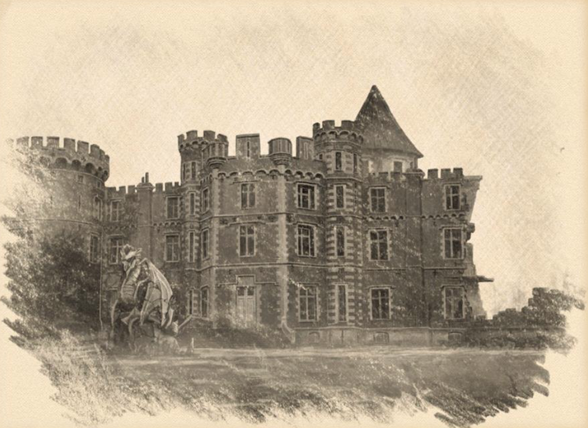

Gegenstände
Der Fall von Argynvost

Graf Argynvost kommt nach Barovia
Ein Edelmann namens Graf Argynvost kam vor Jahrhunderten in das Tal. Er war nicht irgendein Adliger, sondern ein wohlhabender Silberdrache, der ein Leben in der Verkleidung eines Adligen führte. Er war eng mit den Fey befreundet, die sich um das Land kümmerten, und er besuchte sie oft und zollte ihnen Tribut.
Malduk: Warum kam Graf Argynvost nach Barovia?
Graf Argynvost sorgt sich um den Bernsteintempel
Argynvost erfuhr von aufstrebenden militärischen Kräften und vermutete, dass ein Krieg bevorstand. Als Argynvost vom Bernsteintempel erfuhr, der ein Lager für dunkle Mächte war, machte er sich Sorgen. Denn wenn die im Bernsteintempel gefangenen dunklen Mächte in die falschen Hände fielen oder, schlimmer noch, freigesetzt würden, wäre das Tal dem Untergang geweiht. Die Zauberer, die als Wächter des Bernsteintempels dienten, würden Hilfe brauchen, wenn eine Armee versuchen würde, sie zu belagern.
Bau von Argynvostholt und den Toren von Tsolenka
Er meldete sich freiwillig, um sicherzustellen, dass das, was im Bernsteintempel gefangen war, nicht entkommen konnte. Er beauftragte die sagenumwobenen Ursari-Steinmetze mit dem Bau seines befestigten Herrenhauses Argynvostholt und dem Bau der Tore am Tsolenka-Pass, um diejenigen abzuwehren, die auf der Suche nach dem Bernsteintempel in die Berge reisen wollten.
Gründung des Ordens des Silbernen Drachen
Argynvost war außerordentlich wohlhabend und wandte sich an den Orden des Drachen und zahlte einen hohen Tribut, um sich die Gunst eines kleinen Kontingents von Paladin-Rittern zu sichern. Sie wurden ein Kapitel des Drachenordens, bekannt als der Orden des Silberdrachen.
.png)
Schutz des Bernsteintempels
Argynvosts Ritter sollten die Ländereien Barovias im Namen des Drachenordens schützen und zusammen mit den Schildmaiden als Wächter des Tsolenka-Passes dienen, wobei Graf Argynvost ihr Lehnsherr war. Ihr wahres, geheimes Ziel war es natürlich, den Bernsteintempel um jeden Preis zu schützen.
Graf Strahd kann die Tore von Tsolenka nicht bezwingen
Als der Große Krieg ausbrach, wurde ein junger Prinz, der seine Truppen anführte, um das Land zu erobern, vom Orden des Silberdrachen vertrieben. Der junge Prinz und seine Armee waren Argynvost und seinem Kontingent an Paladin-Rittern nicht gewachsen.
Graf Strahd tötet den Drachen Graf Argynvost
Der junge Prinz erfuhr von Argynvosts Geheimnis: Er war ein Silberdrache. Der Prinz brachte Argynvost dazu, seine wahre Natur als Silberdrache zu enthüllen, indem er eine Falle stellte und seine Paladin-Ritter weglockte, so dass Argynvost mit nur einem einzigen tapferen Ritter allein blieb. Der junge Prinz erschlug den Drachen Argynvost, ließ seinen Leichnam in Stücke hacken und den Drachenschädel nach Schloss Rabenhorst bringen. Der Drachenschädel wurde der wertvollste Besitz des jungen Prinzen, eine Trophäe seines eroberten Landes.
Quest: Den Drachenschädel wieder nach Argynvostholt zurück bringen.
Graf Strahd tötet die Ritter des Silbernen Drachen
Mit dem Tod von Argynvost verflüchtigte sich die Magie des Silberdrachen, die die Paladin-Ritter schützte, schnell. Die Paladin-Ritter eilten zurück nach Argynvostholt und erfuhren, dass ihr Graf getötet worden war und dass der junge Prinz auf sie wartete. Der junge Prinz und seine Truppen überwältigten die Ritter, die von Müdigkeit geplagt waren und nicht mehr durch die Magie des Silberdrachen geschützt wurden. Die Truppen des jungen Prinzen versammelten sich, töteten die Paladin-Ritter und steckten ihre Köpfe zur Warnung vor den Toren Barovia (Dorf)s auf Spieße. Nur Sir Godfrey entkam dem Blutvergießen und floh in die Abtei St. Martikov, um sie vor dem Fall von Argynvost und dem den Fall von Argynvostholt und den Ritter des Silbernen Drachen zu warnen.
Graf Strahd foltert Vladimir Horngaard
Der dunkle Fürst hielt den größten der Ritter, Vladimir Horngaard, am Leben und folterte ihn tagelang in den Kerkern von Schloss Rabenhorst. An dem Tag, an dem Vladimir Horngaard sterben sollte, erzählte ihm der dunkle Fürst, wie er Argynvost erschlug, seinen Körper zerhackte und den Drachenschädel als große Trophäe aufstellte. Vladimir Horngaard wurde wütend und verfluchte den jungen Prinzen mit seinem letzten Atemzug, denn er und die Paladin-Ritter würden ihren Grafen Argynvost rächen.
Die Wiedergänger
Vladimir Horngaard kehrte als Wiedergänger zurück und schwor, die Zerstörung des Ordens des Silbernen Drachens und den Tod Graf Argynvosts zu rächen. Sein Eifer war so groß, dass die Mächte auch die Geister mehrerer anderer Paladin-Ritter zurückbrachten, die sich unter Vladimir Horngaards Kommando als Wiedergänger erhoben. Die rachsüchtigen Wiedergänger töteten viele Soldaten des dunklen Prinzen. Da ihre Geister in Barovia gefangen sind, ist es erstaunlich, dass ihre Geister jedes Mal, wenn die untoten Ritter getötet werden, neue Leichen finden, die sie bewohnen und an einem anderen Tag weiterkämpfen. Obwohl die untoten Ritter zahlenmäßig weit unterlegen waren, führten sie monatelang Krieg und töteten Hunderte von Feinden. Die Reihen von Graf Strahds Streitkräften litten furchtbar, aber Graf Strahds Aufmerksamkeit galt anderen Dingen.

Sir Godfrey versucht die gefangene Wasserfey zu retten
Sir Godfrey erfuhr bald, dass der junge Prinz die Geheimnisse der dunklen Mächte entdeckt hatte. Es kamen Gerüchte auf, dass der dunkle Prinz eine der Fey gefangen genommen und eingekerkert hatte. In einer letzten Verzweiflungstat versuchte Sir Godfrey, die Fey in einem vergeblichen Versuch zu retten, um das Barovia zu retten. Als der dunkle Fürst Sir Godfreys Hingabe an die Fey entdeckte, schlug er ihn ohne zu zögern nieder. Mit der Zeit kehrte Sir Godfrey, wie auch die anderen Paladin-Ritter, als Wiedergänger zurück und diente unter Vladimir Horngaard.
Aufstieg der Dunklen Mächte
Vladimir Horngaards Wiedergänger-Ritter wurden mit dem Aufstieg der Dunklen Mächte überwältigt. Verderbte Kreaturen und böse Monster tauchten aus allen Ecken Barovias auf. Der Krieg war verloren, und Vladimir Horngaard verlor alle Hoffnung. Vladimir Horngaard und seine Ritter der Wiedergeburt hätten sich zur ewigen Ruhe begeben sollen, aber ihre Geister konnten Barovia nicht verlassen. Ein böser Nebel hüllte das Land ein, und ihre Seelen waren für immer gefangen.
Der Hass von Vladimir Horngaard
Da ihnen die ewige Ruhe verweigert wurde und sie nichts anderes zu tun hatten, setzte Vladimir Horngaard seine untoten Ritter auf Rache ein und tötete die Agenten des dunklen Prinzen und jeden, der dem dunklen Prinzen helfen könnte. Jahrhunderte vergingen und die untoten Ritter wurden von Hass zerfressen und haben ihre Ehre und ihren Adel an Zorn und Feindseligkeit verloren. Ihre Erlösung hängt davon ab, ob Vladimir Horngaard diesen Hass ablegen kann. Es heißt, dass der untote Ritter noch heute in den Ruinen von Argynvostholt brütet.
Quest: Vladimir Horngaard in Argynvostholt seinen Hass ablegen und Ehre und Adel zurückgewinnen lassen, um Erlösung zu finden.
In den Träumen zeigt sich, dass Vladimir Horngaard durch die Rückgabe des Drachenschädels erlöst werden kann
Auch der Geist des Drachens Argynvost ruht nicht. Er spürt, dass die untoten Ritter korrumpiert wurden, und er wendet sich an diejenigen, die er in ihren Träumen für würdig hält, in der Hoffnung, dass sie den untoten Rittern helfen werden, Frieden zu finden.
Den Träumen zufolge kann Vladimir Horngaards Geist noch zur Ruhe kommen, wenn der Drachenschädel zurückgegeben wird. In den Träumen wird der Drachenschädel an seinen rechtmäßigen Platz im Mausoleum von Argynvostholt zurückgebracht. Dann steigt die Essenz des Drachens zum höchsten Turm des Schlosses auf und verwandelt sich in ein Leuchtfeuer aus himmlischem Licht, das jeden Winkel Barovias erhellt. Das Licht des Leuchtfeuers dringt in die Seele von Vladimir Horngaard ein, wo immer er auch sein mag, und erinnert ihn an die Tugenden, die er auf dem Weg verloren hat.
In den Träumen fällt Vladimir Horngaard daraufhin auf die Knie und weint lautstark. Vladimir Horngaard fleht die Mächte an, seine Mitritter aus der Hölle des Lebens zu befreien, zu der sein Hass sie verdammt hat. Diese selbstlose Tat ermöglicht es ihm und seinen Mitstreitern, ihren Hass loszulassen und sowohl Erlösung als auch Ruhe zu finden, wenn nicht gar zu ruhen. Ihre Geister sind zwar immer noch in Barovia gefangen, aber sie sind nicht mehr dazu verdammt, Rache an den Lebenden zu üben.
Das Spuken in Argynvostholt
Seit diesem Tag ist Argynvostholt zu einer verwunschenen Ruine geworden, eine ehemalige Bastion des Adels und des Lichts, die sich in einen Ort der Trostlosigkeit und Unruhe verwandelt hat. Es heißt, es spuke dort und sei ein gefährlicher Ort. Die dort gefangenen Geister sind nicht böse, aber sie haben die Nase voll von den Lebenden und dulden keine Übergriffe. Nur wenige haben sich im Laufe der Jahrhunderte dorthin gewagt.

KI-Zusammenfassung
Der Fall von Argynvost ist ein Gegenstand im Besitz der Gruppe, bei Malduk. Die lokalen Notizen halten dazu fest: Ein Edelmann namens Graf Argynvost kam vor Jahrhunderten in das Tal. Er war nicht irgendein Adliger, sondern ein wohlhabender Silberdrache, der ein Leben in der Verkleidung eines Adligen führte... Malduk: Warum kam Graf Argynvost nach Barovia? Argynvost erfuhr von aufstrebenden militärischen Kräften und vermutete, dass ein Krieg bevorstand. Als Argynvost vom Bernsteintempel erfuhr, der ein Lager für dunkle Mächte war, machte er sich Sorgen... Er meldete sich freiwillig, um sicherzustellen, dass das, was im Bernsteintempel gefangen war, nicht entkommen konnte... Direkte Bezüge bestehen zu Graf Argynvost, Barovia, Silberdrache, Fey, Bernsteintempel. Der Fall von Argynvost wird außerdem in Graf Argynvost, Abtei St. Martikov, Argynvost, Argynvostholt, Drachenschädel erwähnt. Diese Zusammenfassung folgt ausschließlich den vorhandenen Notizen und ergänzt keine neuen Fakten.